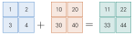
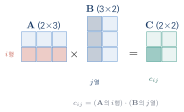
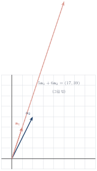
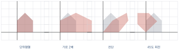

행렬을 다루는 기본적인 연산
이 장을 마치면
앞 장에서 벡터의 연산을 배웠으니 이제 행렬의 차례다. 덧셈과 스칼라 곱은 벡터와 다를 것이 없다. 성분끼리 하면 그만이다.
문제는 곱셈이다. 행렬의 곱셈은 성분끼리 곱하는 것이 아니다. 규칙이 낯설고 계산도 번거롭다. 왜 이렇게 이상한 규칙을 만들었을까? 답은 이 장의 후반부에 있다. 행렬 곱은 계산의 편의를 위해 만든 규칙이 아니라, "변환을 이어서 적용한다"는 개념을 그대로 옮긴 것이다. 그 사실을 이해하고 나면 낯선 규칙이 필연으로 보이기 시작한다.
5.1 행렬의 덧셈, 뺄셈, 스칼라 곱
겹쳐 놓고 더한다
두 행렬의 덧셈은 크기가 같을 때만 정의된다. \(\Rmat{m}{n}\)에 속한 행렬은 같은 \(\Rmat{m}{n}\)의 행렬과만 더할 수 있고, 결과 역시 \(\Rmat{m}{n}\)에 속한다.
\(\mm{A}, \mm{B} \in \Rmat{m}{n}\)이고 \(c\)가 스칼라일 때
그림으로 이해하면 간단하다. 두 행렬을 겹쳐 놓고 같은 자리의 숫자끼리 더하면 된다.

두 행렬의 크기가 같다는 말과 두 행렬이 같다는 말은 다르다. 크기가 같다는 것은 행과 열의 수가 일치한다는 뜻이고, 같다(\(\mm{A}=\mm{B}\))는 것은 크기가 같으면서 대응하는 모든 성분까지 일치한다는 뜻이다.
\(\mm{A} = \mtwo{1}{2}{3}{4}\), \(\mm{B} = \mtwo{5}{6}{7}{8}\)일 때 \(\mm{A}+\mm{B}\)와 \(2\mm{A}\)를 구하시오.
import numpy as np
A = np.array([[1., 2.], [3., 4.]])
B = np.array([[5., 6.], [7., 8.]])
print('A + B =\n', A + B)
print('A - B =\n', A - B)
print('2 * A =\n', 2 * A)
# 분배법칙 확인: 2(A+B) = 2A + 2B
print('분배법칙 :', np.allclose(2 * (A + B), 2 * A + 2 * B))A + B = [[ 6. 8.] [10. 12.]] A - B = [[-4. -4.] [-4. -4.]] 2 * A = [[2. 4.] [6. 8.]] 분배법칙 : True
성질
\(\mm{A}, \mm{B}, \mm{C} \in \Rmat{m}{n}\)이고 \(c, d\)가 스칼라일 때
4장의 벡터 성질과 판박이다. 그럴 수밖에 없다. 행렬의 덧셈과 스칼라 곱은 성분별 연산이고, 성분은 실수이기 때문이다. \(m \times n\) 행렬은 사실 \(mn\)차원 벡터를 직사각형으로 접어 놓은 것이라고 봐도 무방하다. 이 관점은 8장의 벡터공간에서 정식으로 다룬다.
여기서 (8)만 새롭다. 덧셈과 전치는 순서를 바꿔도 된다는 뜻이다. 뒤에서 보겠지만 곱셈과 전치는 그렇지 않다.
import numpy as np
rng = np.random.default_rng(0)
A = rng.normal(0, 1, (3, 4))
B = rng.normal(0, 1, (3, 4))
print('(A+B).T == A.T + B.T :', np.allclose((A + B).T, A.T + B.T))
print('영행렬 :\n', np.zeros((2, 3)))(A+B).T == A.T + B.T : True 영행렬 : [[0. 0. 0.] [0. 0. 0.]]
행렬 연산을 그림으로 확인하기
숫자만으로는 행렬 연산의 효과를 실감하기 어렵다. show_matrix()로 확인해 보자.
import numpy as np
import matplotlib.pyplot as plt
from lautils import *
rng = np.random.default_rng(7)
A = rng.normal(0, 1, (6, 6))
B = np.eye(6) * 2 # 대각선만 2인 행렬
fig, axes = plt.subplots(1, 4, figsize=(12, 3.2))
show_matrix(axes[0], A, fmt='', title='A')
show_matrix(axes[1], B, fmt='', title='B = 2I')
show_matrix(axes[2], A + B, fmt='', title='A + B')
show_matrix(axes[3], -A, fmt='', title='-A')
plt.tight_layout(); plt.show()A + B에서는 대각선만 색이 진해지고 나머지는 그대로다. -A에서는 모든 색이 정반대로 뒤집힌다(붉은 칸은 파랗게, 파란 칸은 붉게). 숫자를 하나하나 확인하지 않아도 연산이 무엇을 했는지 알 수 있다.
fmt=''로 숫자 숨기기show_matrix()의 fmt 인자에 빈 문자열을 주면 숫자가 표시되지 않고 색만 남는다. 행렬이 커서 숫자를 읽을 수 없을 때 유용하다. 이 책에서는 \(6 \times 6\)을 넘어가면 대체로 숫자를 숨긴다.
5.2 행렬의 곱셈과 아다마르 곱
행렬 곱의 정의
두 행렬 \(\mm{A}\)와 \(\mm{B}\)의 곱은 \(\mm{A}\mm{B}\)로 쓰며, 특별한 연산자 기호를 쓰지 않는다. 그런데 아무 두 행렬이나 곱할 수 있는 것은 아니다.
\(\mm{A} \in \Rmat{m}{p}\), \(\mm{B} \in \Rmat{p}{n}\)일 때 — 즉 \(\mm{A}\)의 열의 수와 \(\mm{B}\)의 행의 수가 같을 때 — 곱 \(\mm{C} = \mm{A}\mm{B} \in \Rmat{m}{n}\)의 각 성분은 다음과 같다.
말로 옮기면 이렇다. 결과의 \((i,j)\) 성분은 \(\mm{A}\)의 \(i\)번째 행과 \(\mm{B}\)의 \(j\)번째 열의 내적이다.

크기 조건을 외우는 요령이 있다. 두 행렬의 크기를 나란히 적어 보자.
안쪽 두 숫자가 같아야 곱할 수 있고, 바깥쪽 두 숫자가 결과의 크기가 된다.
\(\mm{A} = \begin{bmatrix} 1&2&3 \\ 4&5&6 \end{bmatrix}\), \(\mm{B} = \begin{bmatrix} 7&8 \\ 9&10 \\ 11&12 \end{bmatrix}\)일 때 \(\mm{A}\mm{B}\)를 구하시오.
import numpy as np
A = np.array([[1., 2., 3.],
[4., 5., 6.]])
B = np.array([[7., 8.],
[9., 10.],
[11., 12.]])
print('A @ B =\n', A @ B)
print('shape :', (A @ B).shape)
# 정의 그대로 구현해 확인하기
C = np.zeros((A.shape[0], B.shape[1]))
for i in range(A.shape[0]):
for j in range(B.shape[1]):
C[i, j] = A[i, :] @ B[:, j] # i행과 j열의 내적
print('직접 구현 :', np.allclose(C, A @ B))A @ B = [[ 58. 64.] [139. 154.]] shape : (2, 2) 직접 구현 : True
크기가 맞지 않으면 넘파이는 오류를 낸다.
ValueError: matmul: Input operand 1 has a mismatch in its core dimension 0, with gufunc signature (n?,k),(k,m?)->(n?,m?) (size 2 is different from 3)메시지가 복잡해 보이지만 요지는 "안쪽 숫자가 다르다"는 것이다. 이 오류를 만나면 두 배열의
shape을 출력해 보는 것이 가장 빠른 해결책이다.아다마르 곱과의 구별
행렬에도 성분별 곱, 즉 아다마르 곱Hadamard product이 있다. 넘파이에서는 *로 계산되며 크기가 같은 행렬끼리만 가능하다.
import numpy as np
A = np.array([[1., 2.], [3., 4.]])
B = np.array([[10., 20.], [30., 40.]])
print('A * B (아다마르) =\n', A * B)
print('A @ B (행렬 곱) =\n', A @ B)A * B (아다마르) = [[ 10. 40.] [ 90. 160.]] A @ B (행렬 곱) = [[ 70. 100.] [150. 220.]]
수식의 \(\mm{A}\mm{B}\)를 코드로 옮길 때 A * B라고 쓰는 것은 이 책에서 가장 흔한 실수다. 반드시 A @ B 또는 np.matmul(A, B)를 써야 한다. 두 행렬이 모두 정방행렬이면 크기 오류도 나지 않으므로 조용히 틀린 답이 나온다.
단위행렬과 곱셈의 성질
크기가 맞는 행렬 \(\mm{A}, \mm{B}, \mm{C}\)와 스칼라 \(c\)에 대하여
(5)와 (6)이 스칼라와 다른 점이며, 반드시 기억해야 한다.
교환법칙이 성립하지 않는다
실수에서는 \(3 \times 5 = 5 \times 3\)이 당연하지만, 행렬에서는 \(\mm{A}\mm{B}\)와 \(\mm{B}\mm{A}\)가 다르다. 애초에 크기가 맞지 않아 한쪽만 계산되는 경우도 흔하다. 크기가 같은 정방행렬이어도 값이 다르다.
import numpy as np
A = np.array([[1., 2.], [3., 4.]])
B = np.array([[0., 1.], [1., 0.]]) # 행과 열을 바꾸는 행렬
print('A @ B =\n', A @ B)
print('B @ A =\n', B @ A)
print('같은가 :', np.allclose(A @ B, B @ A))A @ B = [[2. 1.] [4. 3.]] B @ A = [[3. 4.] [1. 2.]] 같은가 : False
왜 이런 일이 벌어질까? 다음 절에서 밝혀지겠지만, 행렬 곱은 변환을 이어서 적용하는 것이기 때문이다. "90도 회전한 뒤 옆으로 늘이기"와 "옆으로 늘인 뒤 90도 회전하기"는 결과가 다르다. 옷을 입을 때 양말을 신고 신발을 신는 것과 신발을 신고 양말을 신는 것이 다른 것과 같은 이치다.
전치의 순서가 뒤바뀐다
\((\mm{A}\mm{B})\tp = \mm{B}\tp\mm{A}\tp\)는 처음에는 어색하지만 크기를 따져 보면 자연스럽다. \(\mm{A}\)가 \(m\times p\), \(\mm{B}\)가 \(p\times n\)이면 \((\mm{A}\mm{B})\tp\)는 \(n\times m\)이다. 이 크기를 만들려면 \(n\times p\)인 \(\mm{B}\tp\)가 먼저 오고 \(p\times m\)인 \(\mm{A}\tp\)가 뒤에 와야 한다. 순서를 지키면 크기가 맞지 않는다.
import numpy as np
rng = np.random.default_rng(1)
A = rng.normal(0, 1, (2, 3))
B = rng.normal(0, 1, (3, 4))
print('(AB).T shape :', (A @ B).T.shape)
print('B.T @ A.T :', np.allclose((A @ B).T, B.T @ A.T))(AB).T shape : (4, 2) B.T @ A.T : True
- 행렬 곱은 안쪽 크기가 같아야 가능하고, 결과는 바깥쪽 크기가 된다.
- \(c_{ij}\)는 \(\mm{A}\)의 \(i\)행과 \(\mm{B}\)의 \(j\)열의 내적이다.
A * B는 아다마르 곱,A @ B가 행렬 곱이다. 절대 혼동하지 말 것.- 행렬 곱은 결합·분배법칙은 만족하지만 교환법칙은 만족하지 않는다.
- \((\mm{A}\mm{B})\tp = \mm{B}\tp\mm{A}\tp\)로 전치는 순서를 뒤집는다.
5.3 행렬 곱을 보는 네 가지 관점
식 \(\eqref{eq:ch05_matmul}\)은 행렬 곱을 계산하는 방법을 알려 주지만, 그것이 무엇인지는 알려 주지 않는다. 같은 계산을 네 가지 방식으로 바라보면 행렬 곱의 정체가 훨씬 선명해진다. 이 절은 이 책에서 가장 중요한 절 가운데 하나다.
관점 1: 행과 열의 내적 (성분 하나씩)
이미 배운 관점이다. \(c_{ij}\)는 \(\mm{A}\)의 \(i\)행과 \(\mm{B}\)의 \(j\)열의 내적이다. 계산할 때는 이 관점이 가장 편하다.
관점 2: 열의 선형결합 — 가장 중요한 관점
이제 특별한 경우를 보자. \(\mm{B}\)가 열벡터 하나뿐인 경우, 즉 \(\mm{A}\vv{x}\)를 생각해 보자.
마지막 등호를 눈여겨보라. 결과는 \(\mm{A}\)의 열벡터들을 \(\vv{x}\)의 성분만큼 섞은 것이다.
\(\mm{A} = [\vv{a}_1\ \vv{a}_2\ \cdots\ \vv{a}_n]\)의 열벡터를 \(\vv{a}_j\)라 하면
이 관점이 왜 중요한가? 연립방정식 \(\mm{A}\vv{x} = \vv{b}\)를 완전히 새로운 눈으로 보게 해 주기 때문이다. 이 식은 이제 "미지수를 구하라"가 아니라 다음 질문이 된다.
\(\mm{A}\)의 열벡터들을 적당히 섞어서 \(\vv{b}\)를 만들 수 있는가? 만들 수 있다면 그 비율은 얼마인가?
이 질문의 답이 "만들 수 없다"이면 방정식에 해가 없는 것이고, "여러 방법으로 만들 수 있다"이면 해가 무수히 많은 것이다. 8장에서 이 관점이 결정적인 역할을 한다.

import numpy as np
A = np.array([[1., 2.],
[3., 4.]])
x = np.array([5., 6.])
print('A @ x :', A @ x)
print('열의 선형결합:', x[0] * A[:, 0] + x[1] * A[:, 1])A @ x : [17. 39.] 열의 선형결합: [17. 39.]
\(\mm{A}\vv{x}\)는 \(\mm{A}\)의 열벡터들의 선형결합이다. 이 문장은 이 책 전체에서 가장 자주 되풀이될 문장이다. 연립방정식(8장), 열공간과 랭크(8장), 최소제곱(12장)이 모두 이 관점에서 출발한다.
관점 3: 열 단위로 처리하기
\(\mm{B}\)가 여러 개의 열을 가진 일반적인 경우로 돌아가자. \(\mm{B} = [\vv{b}_1\ \vv{b}_2\ \cdots\ \vv{b}_n]\)이라 하면
즉 \(\mm{B}\)의 각 열에 \(\mm{A}\)를 따로따로 적용한 결과를 나란히 놓은 것이 행렬 곱이다. 이 관점은 데이터를 한꺼번에 변환할 때 유용하다. 100개의 점에 같은 회전을 적용하고 싶다면, 점들을 열로 쌓아 놓고 회전행렬을 한 번 곱하면 된다.
import numpy as np
A = np.array([[0., -1.], # 90도 회전행렬 (7장에서 배운다)
[1., 0.]])
P = np.array([[1., 2., 3.], # 세 점을 열로 쌓음
[0., 1., 2.]])
print('A @ P =\n', A @ P)
print('첫 열만 :', A @ P[:, 0]) # 같은 결과의 첫 열A @ P = [[ 0. -1. -2.] [ 1. 2. 3.]] 첫 열만 : [0. 1.]
관점 4: 외적의 합 (랭크-1 조각들)
마지막 관점은 조금 낯설지만 11장의 특이값 분해를 이해하는 열쇠다. 행렬 곱은 다음과 같이 여러 개의 랭크-1 행렬의 합으로도 쓸 수 있다.
여기서 \(\vv{a}_k\)는 \(\mm{A}\)의 \(k\)번째 열이고 \(\vv{b}_k\tp\)는 \(\mm{B}\)의 \(k\)번째 행이다. 열벡터와 행벡터를 곱하면 (내적이 아니라) 행렬이 나오는데, 이것을 외적outer product이라 한다. 4장의 3차원 외적(cross product)과는 다른 개념이니 주의하자.
이렇게 만들어진 행렬은 모든 열이 서로 상수배 관계이므로 "정보량"이 매우 적다. 이런 행렬을 랭크가 1이라고 한다. 행렬 곱을 이런 얇은 조각들의 합으로 보는 관점이, "큰 행렬을 몇 개의 조각으로 근사한다"는 11장의 아이디어로 이어진다.
import numpy as np
import matplotlib.pyplot as plt
from lautils import *
A = np.array([[1., 2., 3.],
[4., 5., 6.]])
B = np.array([[7., 8.],
[9., 10.],
[11., 12.]])
total = np.zeros((2, 2))
fig, axes = plt.subplots(1, 4, figsize=(11, 3))
for k in range(3):
piece = np.outer(A[:, k], B[k, :]) # k번째 랭크-1 조각
total += piece
show_matrix(axes[k], piece, fmt='{:.0f}', title=f'piece {k}')
show_matrix(axes[3], total, fmt='{:.0f}', title='sum = A @ B')
plt.tight_layout(); plt.show()
print('조각의 합 == A @ B :', np.allclose(total, A @ B))조각의 합 == A @ B : True
네 관점의 정리
| 관점 | 보는 방식 | 쓰이는 곳 | |
|---|---|---|---|
| 1 | 행 \(\cdot\) 열 | 성분을 하나씩 계산 | 손 계산 |
| 2 | 열의 선형결합 | \(\mm{A}\vv{x} = \sum x_j \vv{a}_j\) | 8장, 12장 |
| 3 | 열 단위 처리 | 각 열에 같은 변환 적용 | 데이터 일괄 변환 |
| 4 | 랭크-1의 합 | \(\sum_k \vv{a}_k\vv{b}_k\tp\) | 11장 (SVD) |
같은 숫자를 놓고 네 가지 이야기를 할 수 있다는 것 — 이것이 선형대수의 힘이다. 어떤 문제를 만나면 "어느 관점에서 보면 쉬워지는가"를 먼저 묻는 것이 좋은 습관이다.
5.4 벡터를 다른 벡터로 바꾸는 도구, 행렬곱
행렬은 함수다
\(\mm{A} \in \Rmat{2}{2}\)와 벡터 \(\vv{x} \in \Rsp{2}\)가 있을 때 \(\mm{A}\vv{x}\)는 다시 \(\Rsp{2}\)의 벡터다. 즉 행렬 곱은 벡터를 넣으면 벡터가 나오는 함수다.
이 관점이 3부 전체를 지배한다. 행렬을 숫자 덩어리가 아니라 공간을 통째로 옮기는 장치로 보는 것이다.
기저벡터가 어디로 가는지만 보면 된다
행렬 \(\mm{A}\)가 평면을 어떻게 바꾸는지 알려면 무엇을 확인해야 할까? 모든 점을 다 옮겨 볼 필요는 없다. 놀랍게도 표준기저벡터 두 개가 어디로 가는지만 알면 전부 알 수 있다.
식 \(\eqref{eq:ch05_lincomb}\)에서 \(\vv{x} = \vv{e}_1 = (1,0)\)을 넣어 보자.
즉 \(\mm{A}\vv{e}_1\)은 \(\mm{A}\)의 첫 번째 열이다. 마찬가지로 \(\mm{A}\vv{e}_2\)는 두 번째 열이다.
행렬의 각 열은 그 열 번호에 해당하는 기저벡터가 옮겨 가는 자리다.
이 사실 덕분에 우리는 행렬을 보자마자 그것이 무슨 일을 하는지 그림으로 떠올릴 수 있다. 예를 들어
에서 첫 열은 \((0,1)\)이므로 \(\vv{e}_1\)(오른쪽)이 위쪽으로 갔고, 둘째 열은 \((-1,0)\)이므로 \(\vv{e}_2\)(위쪽)가 왼쪽으로 갔다. 이것은 반시계 방향 90도 회전이다.

import numpy as np
import matplotlib.pyplot as plt
from lautils import *
A = np.array([[0., -1.],
[1., 0.]])
fig, (ax1, ax2) = plt.subplots(1, 2, figsize=(9, 4.5))
for ax in (ax1, ax2):
ax.set_xlim(-3, 3); ax.set_ylim(-3, 3)
ax.set_aspect('equal')
ax.axhline(0, color='black', lw=0.8); ax.axvline(0, color='black', lw=0.8)
# 변환 전
draw_grid(ax1, None, n=2, color='lightgray')
draw_polygon(ax1, UNIT_SQUARE)
draw_vector(ax1, [1, 0], color='crimson', label='e1')
draw_vector(ax1, [0, 1], color='royalblue', label='e2')
ax1.set_title('before')
# 변환 후
draw_grid(ax2, A, n=2, color='steelblue')
draw_polygon(ax2, transform(A, UNIT_SQUARE))
draw_vector(ax2, A[:, 0], color='crimson', label='A e1')
draw_vector(ax2, A[:, 1], color='royalblue', label='A e2')
ax2.set_title('after')
plt.show()여러 개의 점을 한꺼번에 변환하기
이 책에서 앞으로 계속 쓰게 될 패턴을 여기서 확립해 두자. 점들을 행마다 하나씩 담은 배열 \(\mm{P}\)가 있을 때, 모든 점에 \(\mm{A}\)를 적용하는 방법은 두 가지로 적을 수 있다.
lautils의 transform()이 하는 일이 정확히 이것이다. 행에 점을 담는 방식은 데이터 분석의 관례(\(n\)개의 샘플 \(\times\) \(d\)개의 특징)와 일치하므로 이 책 전체에서 이 방식을 쓴다.
import numpy as np
import matplotlib.pyplot as plt
from lautils import *
# 집 모양 다각형 (각 행이 한 점)
house = np.array([[0., 0.], [2., 0.], [2., 1.5],
[1., 2.5], [0., 1.5]])
mats = {
'identity' : np.array([[1., 0.], [0., 1.]]),
'scale x2' : np.array([[2., 0.], [0., 1.]]),
'shear' : np.array([[1., 0.8], [0., 1.]]),
'rotate 45' : np.array([[0.707, -0.707], [0.707, 0.707]]),
}
fig, axes = plt.subplots(1, 4, figsize=(13, 3.5))
for ax, (name, A) in zip(axes, mats.items()):
ax.set_xlim(-3, 4); ax.set_ylim(-1, 4)
ax.set_aspect('equal'); ax.grid(True, alpha=0.3)
ax.axhline(0, color='black', lw=0.6); ax.axvline(0, color='black', lw=0.6)
draw_polygon(ax, house, color='lightgray', alpha=0.4) # 원래 모양
draw_polygon(ax, transform(A, house), color='crimson', alpha=0.4)
ax.set_title(name, fontsize=10)
plt.tight_layout(); plt.show()
회색이 원래 모양, 붉은색이 변환된 모양이다. 행렬의 숫자 네 개가 도형 전체의 운명을 결정한다. 7장에서는 이 변환들에 이름을 붙이고 체계적으로 분류할 것이다.
행렬 곱은 변환의 합성이다
이제 이 장의 첫머리에서 던진 질문에 답할 차례다. 왜 행렬 곱은 그런 복잡한 규칙을 가질까?
변환 \(\mm{B}\)를 먼저 적용하고 그 결과에 \(\mm{A}\)를 적용한다고 하자.
결합법칙에 의해 \(\mm{A}(\mm{B}\vv{x}) = (\mm{A}\mm{B})\vv{x}\)이므로, 두 변환을 이어서 적용하는 것은 곱 행렬 \(\mm{A}\mm{B}\) 하나를 적용하는 것과 같다. 행렬 곱의 규칙은 이 성질이 성립하도록 만들어진 것이다. 계산의 편의가 아니라 필연이었던 셈이다.
이 관점에서 보면 교환법칙이 성립하지 않는 이유도 자명하다. 순서를 바꾸면 다른 결과가 나오는 변환이 얼마든지 있기 때문이다.
import numpy as np
import matplotlib.pyplot as plt
from lautils import *
R = np.array([[0., -1.], [1., 0.]]) # 90도 회전
S = np.array([[2., 0.], [0., 1.]]) # 가로로 2배
house = np.array([[0., 0.], [2., 0.], [2., 1.5], [1., 2.5], [0., 1.5]])
fig, (ax1, ax2) = plt.subplots(1, 2, figsize=(9, 4.5))
for ax, M, title in [(ax1, R @ S, 'R @ S : 늘인 뒤 회전'),
(ax2, S @ R, 'S @ R : 회전한 뒤 늘임')]:
ax.set_xlim(-5, 5); ax.set_ylim(-2, 5)
ax.set_aspect('equal'); ax.grid(True, alpha=0.3)
ax.axhline(0, color='black', lw=0.6); ax.axvline(0, color='black', lw=0.6)
draw_polygon(ax, house, color='lightgray', alpha=0.4)
draw_polygon(ax, transform(M, house), color='crimson', alpha=0.4)
ax.set_title(title, fontsize=10)
plt.show()
print('R @ S =\n', R @ S)
print('S @ R =\n', S @ R)R @ S = [[ 0. -1.] [ 2. 0.]] S @ R = [[ 0. -2.] [ 1. 0.]]
두 그림은 눈에 띄게 다르다. 왼쪽은 가로로 늘인 집이 세워진 모양이고, 오른쪽은 세워진 집이 가로로 늘어난 모양이다. \(\mm{A}\mm{B} \neq \mm{B}\mm{A}\)는 계산상의 특이 사항이 아니라 기하학적 사실이다.
\(\mm{A}\mm{B}\)에서 오른쪽 행렬이 먼저 적용된다. \(\mm{A}\mm{B}\vv{x}\)를 읽을 때는 \(\vv{x}\)에 가장 가까운 \(\mm{B}\)부터 작용한다고 생각해야 한다. 함수 합성 \(f(g(x))\)에서 \(g\)가 먼저 적용되는 것과 같은 이치다. 여러 변환을 연달아 적용하는 그래픽스 코드에서 이 순서를 헷갈리면 물체가 엉뚱한 곳으로 날아간다.
- 행렬은 벡터를 벡터로 보내는 함수다. \(T(\vv{x}) = \mm{A}\vv{x}\).
- 행렬의 \(j\)번째 열 = \(\vv{e}_j\)가 옮겨 가는 자리다. 열만 보면 변환의 정체를 알 수 있다.
- 행렬 곱 \(\mm{A}\mm{B}\)는 변환의 합성이며, 오른쪽부터 적용된다.
- 교환법칙이 성립하지 않는 것은 변환의 순서가 결과를 바꾸기 때문이다.
- 행렬 곱을 세 가지 방법으로 계산하자. 같은 곱을 정의대로, 열의 선형결합으로, 외적의 합으로 각각 계산하고 결과가 일치함을 확인하시오.
import numpy as np A = np.array([[1., 2., 3.], [4., 5., 6.]]) B = np.array([[7., 8.], [9., 10.], [11., 12.]]) # ① 정의대로 C1 = np.zeros((2, 2)) for i in range(2): for j in range(2): C1[i, j] = A[i, :] @ B[:, j] # ② 열 단위로 C2 = np.column_stack([A @ B[:, j] for j in range(2)]) # ③ 랭크-1 조각의 합 C3 = sum(np.outer(A[:, k], B[k, :]) for k in range(3)) print(np.allclose(C1, A @ B), np.allclose(C2, A @ B), np.allclose(C3, A @ B))True True True
- 교환법칙이 깨지는 것을 확인하자. 무작위 정방행렬 100쌍에 대해 \(\mm{A}\mm{B} = \mm{B}\mm{A}\)가 성립하는 경우가 몇 번이나 있는지 세어 보시오.
import numpy as np rng = np.random.default_rng(42) count = 0 for _ in range(100): A = rng.normal(0, 1, (3, 3)) B = rng.normal(0, 1, (3, 3)) if np.allclose(A @ B, B @ A): count += 1 print('교환법칙이 성립한 횟수 :', count) # 그러나 다음 경우에는 항상 성립한다 A = rng.normal(0, 1, (3, 3)) print('A와 I :', np.allclose(A @ np.eye(3), np.eye(3) @ A)) print('A와 2A :', np.allclose(A @ (2 * A), (2 * A) @ A)) print('대각행렬끼리:', np.allclose(np.diag([1., 2., 3.]) @ np.diag([4., 5., 6.]), np.diag([4., 5., 6.]) @ np.diag([1., 2., 3.])))교환법칙이 성립한 횟수 : 0 A와 I : True A와 2A : True 대각행렬끼리: True
무작위로는 100번 중 한 번도 성립하지 않는다. 그러나 단위행렬, 자기 자신의 배수, 대각행렬끼리는 언제나 교환된다. 교환되는 행렬 쌍은 특별한 관계에 있다는 뜻이며, 이 사실이 10장의 동시 대각화로 이어진다.
- 행렬의 열이 기저의 상(image)임을 확인하자. 임의의 행렬에 대해 \(\mm{A}\vv{e}_1\)과 \(\mm{A}\)의 첫 열이 같은지 확인하고 그림으로 그리시오.
import numpy as np import matplotlib.pyplot as plt from lautils import * A = np.array([[1.5, -0.5], [0.5, 1.2]]) e1, e2 = np.eye(2) print('A @ e1 :', A @ e1, ' A의 0열 :', A[:, 0]) print('A @ e2 :', A @ e2, ' A의 1열 :', A[:, 1]) fig, ax = new_axes(xlim=(-2, 3), ylim=(-2, 3)) draw_grid(ax, None, n=2, color='lightgray') draw_grid(ax, A, n=2, color='steelblue') draw_vector(ax, e1, color='lightcoral', width=0.010) draw_vector(ax, e2, color='lightskyblue', width=0.010) draw_vector(ax, A[:, 0], color='crimson', label='A e1') draw_vector(ax, A[:, 1], color='royalblue', label='A e2') plt.show() - 변환을 이어 붙여 보자. 회전과 확대를 두 가지 순서로 합성하여 결과가 다름을 그림으로 보이시오.
import numpy as np import matplotlib.pyplot as plt from lautils import * def rot(deg): t = np.radians(deg) return np.array([[np.cos(t), -np.sin(t)], [np.sin(t), np.cos(t)]]) R = rot(30) S = np.diag([2.0, 0.5]) shape = np.array([[0., 0.], [2., 0.], [2., 1.], [0., 1.]]) fig, axes = plt.subplots(1, 3, figsize=(12, 3.8)) for ax, M, t in [(axes[0], np.eye(2), 'original'), (axes[1], R @ S, 'R @ S'), (axes[2], S @ R, 'S @ R')]: ax.set_xlim(-2, 5); ax.set_ylim(-2, 3) ax.set_aspect('equal'); ax.grid(True, alpha=0.3) draw_polygon(ax, shape, color='lightgray', alpha=0.4) draw_polygon(ax, transform(M, shape), color='crimson', alpha=0.45) ax.set_title(t, fontsize=10) plt.tight_layout(); plt.show() - 신경망 두 층을 계산해 보자. 입력 4차원, 은닉 3차원, 출력 2차원인 신경망의 순전파를 행렬 곱으로 구현하시오. 활성화 함수는 ReLU를 쓴다.
import numpy as np rng = np.random.default_rng(0) x = np.array([0.5, -1.2, 2.0, 0.3]) # 입력 (4,) W1 = rng.normal(0, 0.5, (4, 3)) # 1층 가중치 b1 = np.zeros(3) W2 = rng.normal(0, 0.5, (3, 2)) # 2층 가중치 b2 = np.zeros(2) h = np.maximum(0, x @ W1 + b1) # ReLU y = h @ W2 + b2 print('은닉층 :', np.round(h, 3)) print('출력 :', np.round(y, 3)) # 활성화 함수를 빼면 두 층이 한 층으로 합쳐진다 W_combined = W1 @ W2 print('합쳐진 가중치 shape :', W_combined.shape) print('같은 결과인가 :', np.allclose(x @ W1 @ W2, x @ W_combined))마지막 두 줄이 1장에서 말한 사실을 확인해 준다. 활성화 함수가 없으면 \(\mm{W}_1\mm{W}_2\)라는 하나의 행렬로 합쳐져 버린다.
- 큰 행렬 곱의 비용을 재어 보자. 크기를 바꿔 가며 행렬 곱 시간을 측정하고, 연산량이 \(n^3\)에 비례한다는 것을 확인하시오.
import numpy as np import time for n in [200, 400, 800]: A = np.random.rand(n, n) B = np.random.rand(n, n) start = time.time() A @ B print(f'n={n:4d} : {time.time() - start:.4f} sec')크기가 두 배가 되면 시간은 대략 여덟 배가 되어야 한다(\(2^3 = 8\)). 실제로는 캐시 효율 등의 이유로 정확히 여덟 배는 아니지만 경향은 확인된다.
- 전치의 순서 규칙을 확인하자. \((\mm{A}\mm{B}\mm{C})\tp = \mm{C}\tp\mm{B}\tp\mm{A}\tp\)가 성립하는지 확인하시오.
import numpy as np rng = np.random.default_rng(3) A = rng.normal(0, 1, (2, 3)) B = rng.normal(0, 1, (3, 4)) C = rng.normal(0, 1, (4, 5)) print(np.allclose((A @ B @ C).T, C.T @ B.T @ A.T)) print('(ABC).T shape :', (A @ B @ C).T.shape)
5장 요약
- 행렬의 덧셈·뺄셈은 크기가 같을 때만 정의되며 성분별로 이루어진다. 스칼라 곱은 모든 성분에 스칼라를 곱한다. 이 연산들은 4장의 벡터 성질과 똑같은 여덟 가지 성질을 만족한다.
- \((\mm{A}+\mm{B})\tp = \mm{A}\tp + \mm{B}\tp\)이다. 덧셈과 전치는 순서를 바꿔도 된다.
- 행렬 곱은 \(\mm{A} \in \Rmat{m}{p}\), \(\mm{B} \in \Rmat{p}{n}\)일 때, 즉 안쪽 크기가 같을 때만 가능하며 결과는 바깥쪽 크기 \(m \times n\)이다. \(c_{ij} = \sum_k a_{ik}b_{kj}\)는 \(\mm{A}\)의 \(i\)행과 \(\mm{B}\)의 \(j\)열의 내적이다.
- 넘파이에서
A * B는 아다마르 곱(성분별),A @ B가 행렬 곱이다. 정방행렬끼리는 크기 오류도 나지 않으므로 혼동하면 조용히 틀린 답을 얻는다. - 행렬 곱은 결합법칙과 분배법칙을 만족하고 단위행렬이 항등원이지만, 교환법칙은 성립하지 않는다(\(\mm{A}\mm{B} \neq \mm{B}\mm{A}\)). 또 \((\mm{A}\mm{B})\tp = \mm{B}\tp\mm{A}\tp\)로 전치는 곱의 순서를 뒤집는다.
- 행렬 곱을 보는 네 가지 관점: ① 행과 열의 내적(손 계산), ② 열의 선형결합 \(\mm{A}\vv{x} = \sum_j x_j\vv{a}_j\), ③ \(\mm{B}\)의 각 열을 따로 변환(\(\mm{A}\mm{B} = [\mm{A}\vv{b}_1\ \cdots]\)), ④ 랭크-1 외적의 합 \(\sum_k \vv{a}_k\vv{b}_k\tp\).
- 관점 ②가 특히 중요하다. \(\mm{A}\vv{x} = \vv{b}\)는 "\(\mm{A}\)의 열들을 섞어 \(\vv{b}\)를 만들 수 있는가"라는 질문이 되며, 이 관점이 8장(연립방정식, 열공간, 랭크)과 12장(최소제곱)의 출발점이다.
- 관점 ④는 11장의 특이값 분해로 이어진다. 큰 행렬을 몇 개의 얇은 조각으로 근사한다는 아이디어가 여기서 나온다.
- 행렬은 벡터를 벡터로 보내는 함수다. \(T(\vv{x}) = \mm{A}\vv{x}\)로 보면 행렬은 공간 전체를 옮기는 장치가 된다.
- 행렬의 \(j\)번째 열은 기저벡터 \(\vv{e}_j\)가 옮겨 가는 자리다. \(\mm{A}\vv{e}_j = \vv{a}_j\)이므로, 열만 확인하면 그 행렬이 무슨 변환인지 알 수 있다. 나머지 벡터는 기저의 조합이므로 자동으로 결정된다.
- 행렬 곱 \(\mm{A}\mm{B}\)는 변환의 합성이다. \((\mm{A}\mm{B})\vv{x} = \mm{A}(\mm{B}\vv{x})\)이므로 \(\mm{B}\)가 먼저 적용되고 \(\mm{A}\)가 나중에 적용된다. 교환법칙이 성립하지 않는 이유도 변환의 순서가 결과를 바꾸기 때문이다.
- 여러 점을 한꺼번에 변환할 때는 점을 행으로 담고 \(\mm{P}\mm{A}\tp\)를 계산한다(
lautils의transform()).
5장 연습문제
- ★ \(\mm{A} = \mtwo{2}{-1}{0}{3}\), \(\mm{B} = \mtwo{1}{4}{-2}{5}\)일 때 \(\mm{A}+\mm{B}\), \(\mm{A}-\mm{B}\), \(3\mm{A}\)를 구하시오.
- ★ 다음 곱셈이 가능한지 판단하고, 가능하다면 결과의 크기를 쓰시오.
- \((3\times4)(4\times2)\) (2) \((2\times5)(2\times5)\) (3) \((1\times3)(3\times1)\) (4) \((3\times1)(1\times3)\)
- ★★ \(\mm{A} = \begin{bmatrix} 1&2 \\ 3&4 \\ 5&6 \end{bmatrix}\), \(\mm{B} = \begin{bmatrix} 1&0&2 \\ 0&1&3 \end{bmatrix}\)일 때 \(\mm{A}\mm{B}\)와 \(\mm{B}\mm{A}\)를 각각 손으로 구하시오. 두 결과의 크기가 왜 다른가?
- ★★ \(\mm{A}\vv{x}\)를 열의 선형결합으로 나타내시오.
\[ \mm{A} = \begin{bmatrix} 1&-1&2 \\ 0&3&1 \end{bmatrix}, \qquad \vv{x} = \begin{bmatrix} 2 \\ 1 \\ -1 \end{bmatrix} \]
- ★★ 다음 행렬이 표준기저벡터를 어디로 보내는지 쓰고, 어떤 변환인지 이름을 붙이시오.
- \(\mtwo{1}{0}{0}{-1}\) (2) \(\mtwo{3}{0}{0}{3}\) (3) \(\mtwo{1}{2}{0}{1}\) (4) \(\mtwo{0}{1}{1}{0}\)
- ★★ \(\mm{A}\mm{B} \neq \mm{B}\mm{A}\)인 \(2\times2\) 행렬의 예를 하나 만들고, 두 결과를 도형에 적용한 그림으로 차이를 보이시오.
- ★★ \(\mm{A}\mm{B} = \mm{B}\mm{A}\)가 항상 성립하는 경우를 세 가지 이상 제시하시오.
- ★★★ \(\mm{A} \in \Rmat{2}{3}\), \(\mm{B} \in \Rmat{3}{2}\)일 때 \(\mm{A}\mm{B}\)를 랭크-1 조각의 합으로 분해하는 코드를 작성하고, 각 조각을
show_matrix()로 그리시오. - ★★ \((\mm{A}\mm{B}\mm{C})\tp\)를 전치 규칙을 이용해 전개하시오. 각 행렬의 크기가 \(\mm{A}\in\Rmat{2}{3}\), \(\mm{B}\in\Rmat{3}{4}\), \(\mm{C}\in\Rmat{4}{2}\)일 때 결과의 크기는?
- ★★★ 다음 코드가 왜 틀렸는지 설명하고 고치시오.
A = np.array([[1., 2.], [3., 4.]]) B = np.array([[5., 6.], [7., 8.]]) print('AB =', A * B) # 행렬 곱을 계산하려는 의도 - ★★★ 다음 세 변환을 순서대로 합성하는 하나의 행렬을 구하고, 삼각형 \((0,0), (2,0), (1,2)\)에 적용한 결과를 그리시오.
- \(x\)축 방향으로 2배 확대
- 반시계 방향 45도 회전
- \(x\)축에 대한 반사
- ★★★ 정규화된 벡터를 행으로 담은 행렬 \(\mm{U}\)에 대해 \(\mm{U}\mm{U}\tp\)의 \((i,j)\) 성분이 \(i\)번째와 \(j\)번째 벡터의 코사인 유사도임을 식으로 설명하시오. 또 이 행렬의 대각성분은 왜 모두 1인가?
- ★★★ 입력 10차원, 은닉층 \((64, 32)\), 출력 3차원인 신경망의 가중치 행렬 크기를 각각 쓰고, 전체 파라미터 개수를 구하시오(편향 포함).